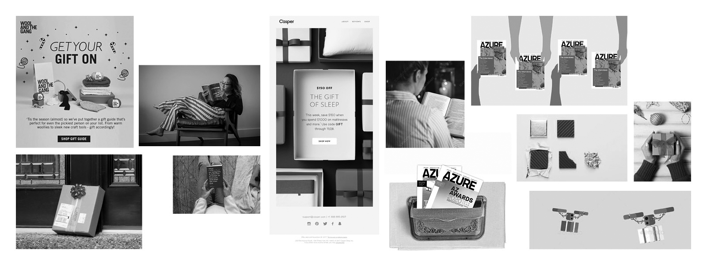
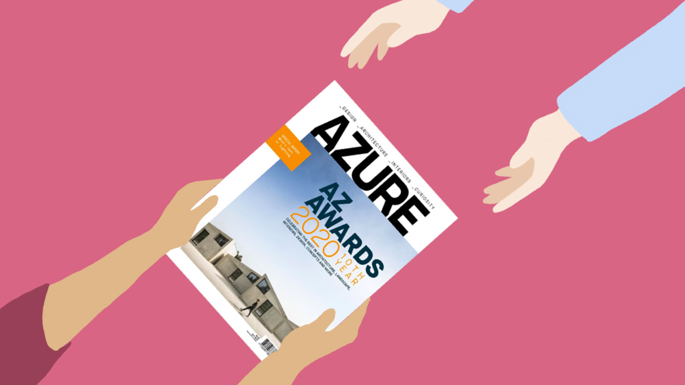
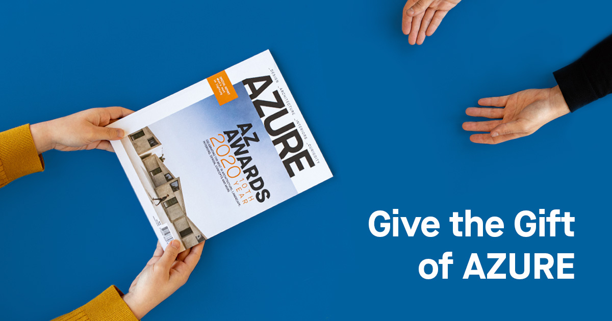
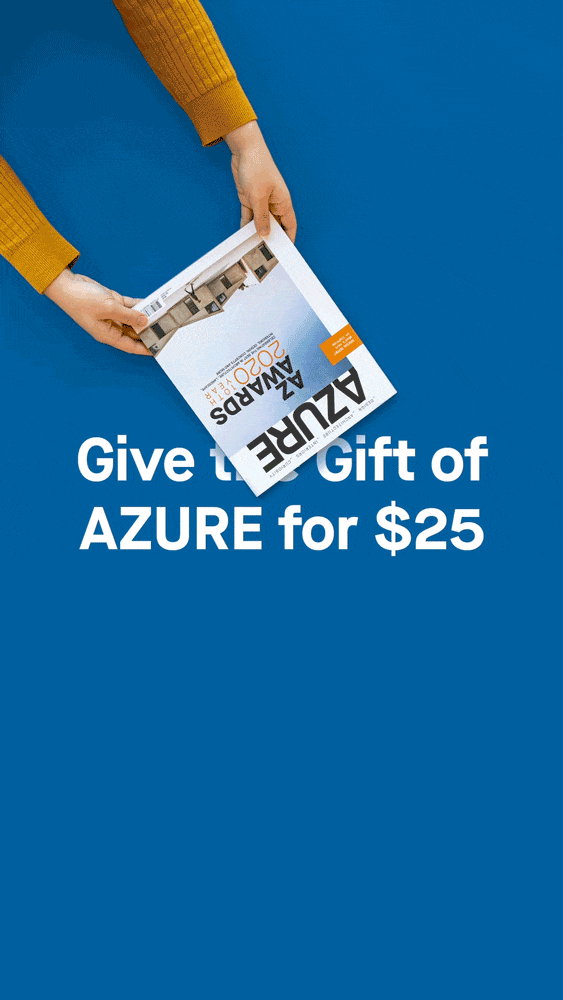
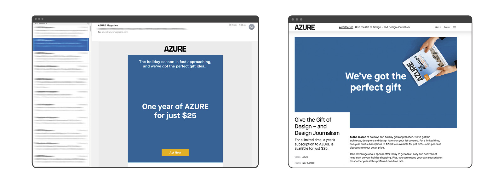

AZURE Gift Campaign |
|
A digital campaign to promote gift subscriptions. |
|
Azure magazine runs a gift campaign at the end of every year, offering a special price for gift subscriptions in time for the holiday. The art department is tasked with refreshing the creative. In 2020, we wanted to work with the idea that a subscription to our award-winning magazine is the best social distanced gift.
Process
The art team explored the different ideas and styling needs for each option. We came up with rough sketches and mockups as proof of concept. Here are some things we kept in mind while designing:
- Visuals should showcase the magazine
- Visuals should be flexible and work in different platforms. There should be an animated and static variation.
- Due to Covid-19 restrictions and project timeline, it needs to be something that’s doable in-house.
- Visuals should be clean, professional, embody the idea of gifts.
- Festive vibe but not emphasizing on Christmas, as not everyone celebrates the same holidays.

Some ideas include: magazine inside packages/mailbox, visual flat lay, over-the-shoulder lifestyle shoot and unwrapping gift stop-motion.

Refined sketch on the chosen idea, also exploring the possibilities of illustration.
Result
We decided on the theme of giving & receiving, with the magazine flying cross in stop motion as a “contactless” gift. The campaign consisted of e-mail newsletters, web ads, blog post and social media assets.



E-blast and blog post with GIF images. In the event that if the GIF didn't run properly, the messaging is still clear on the first frame.